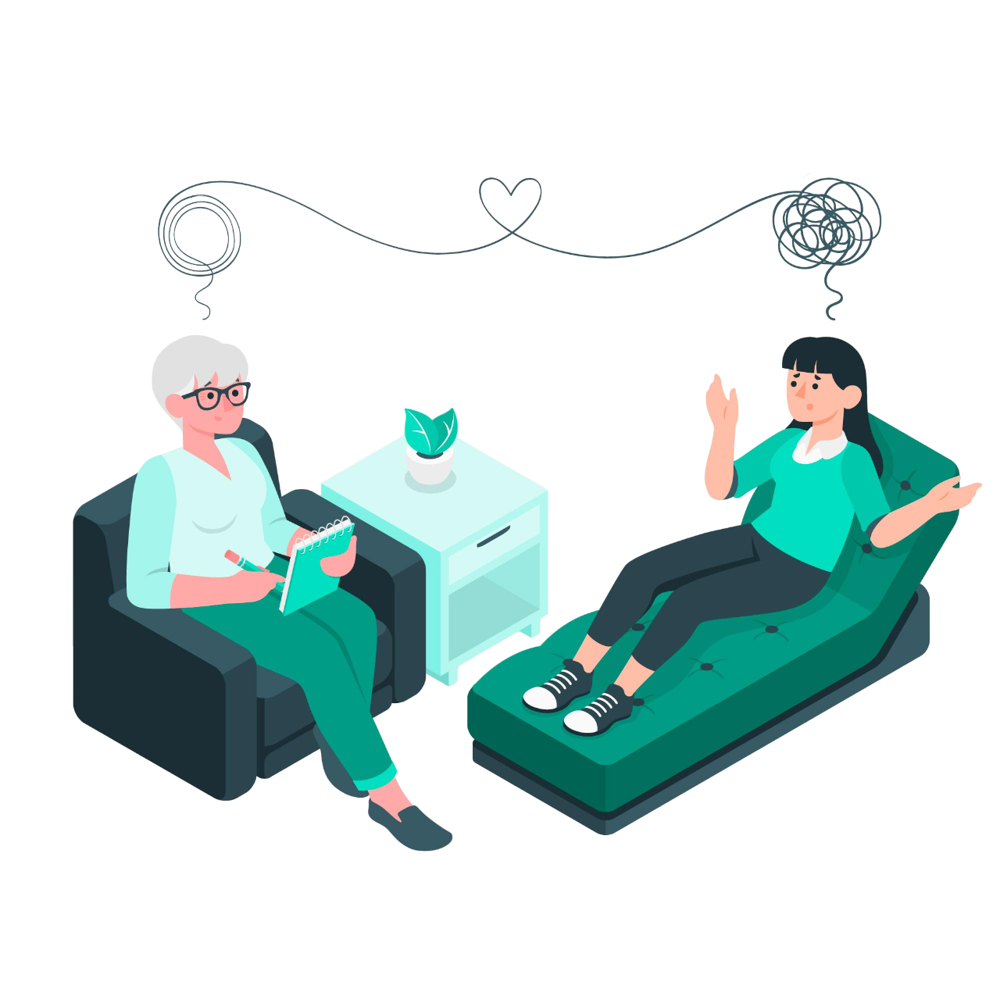

Sobre
Nós
Nossos serviços abrangem tanto a psicoterapia quanto a psiquiatria, proporcionando uma abordagem completa e integrada para o cuidado mental. Com uma equipe de profissionais qualificados e experientes, estamos aqui para ajudá-lo a construir um caminho para uma vida plena e equilibrada. Junte-se a nós enquanto trabalhamos juntos para nutrir sua mente e sua saúde emocional.